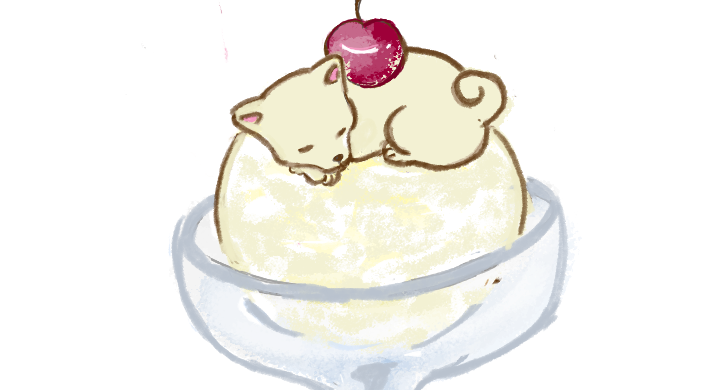
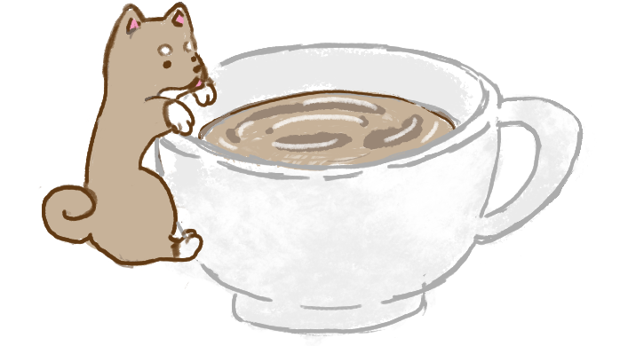
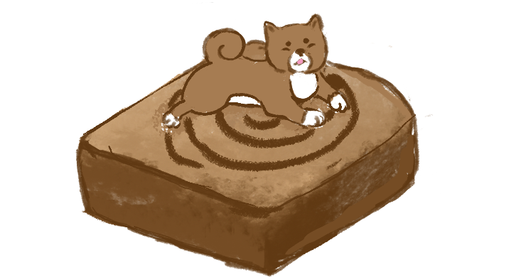
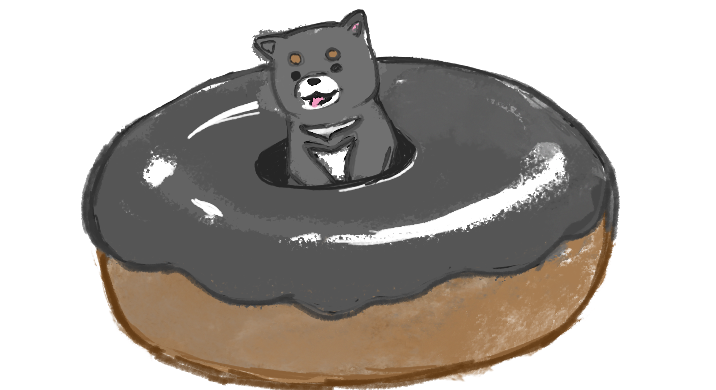

Sweet!

>>
Welcome to the Shiba Cafe! Here, we teach you about the many flavors (and types) of Shiba Inus! It is a dedication to the beloved dog breed from Japan, which was bred during the wartimes of the 20th century war to create the Shibas we know today. Recognizable through their cute facial markings, curly tails, pointy ears, and cat-like attitudes, I hope you will leave fully satisfied from the consumption of delicious Shiba facts.
Vanilla Ice Cream
Cream shibas are almost as sweet as an ice cream parfait! Their fur is a fluffy off-white, and are much different than other Shibas in which their typical facial markings are "whited-out" by their fur. This is a recessive gene which unfortunately disqualifies them from dog shows.
>>
Cafe Au Lait
With a coat as smooth as a latte, tan or red shiba inus are one of the most classic shades recognizable to the breed. The shades range from tan to an almost-reddish dark brown with a cool undercoat. Though red is the most ideal and strongest genetic shade for this breed.
>>
French Toast
Sesame shibas are as bold, warm, and comforting as your morning toast. The sesame coat is among one of the rarest colors for a Shiba Inu. They retain a red undercoat and each hair is darker towards the tip. There are some areas where black is more concentrated, such as its face and tail.
>>
Dark Chocolate Donut
The black and tan Shiba Inu is as soulful and sweet as chocolate. Unlike cream shibas, their bold and dark color markings are natural to the breed, and its black coat creates emphasis on its facial markings. They retain a tri-colored coat with black hair, rusty points, and white facial markings.
< <